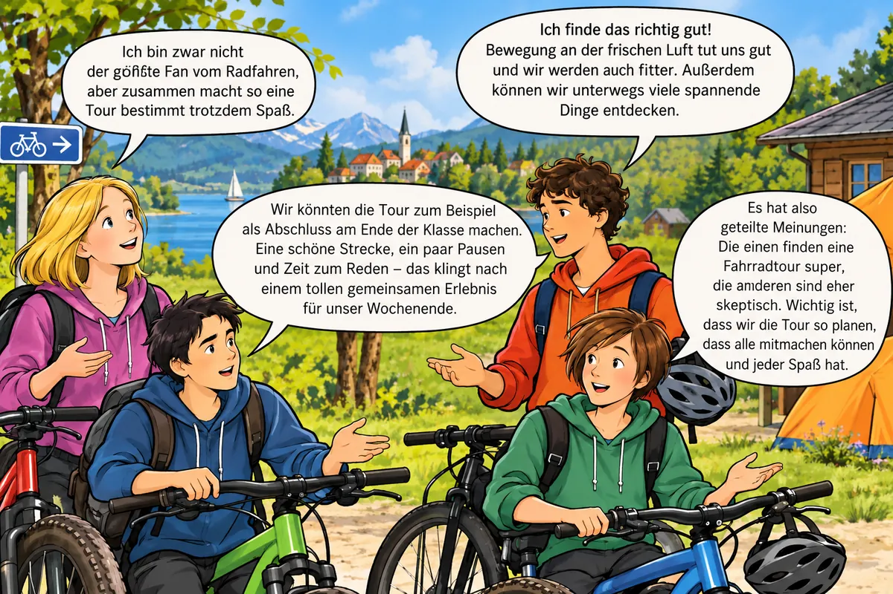

Die Diskussion: Fahrradtour – ja oder nein?

Die Schülerinnen und Schüler diskutieren über den Vorschlag, eine zweitägige Fahrradtour mit Übernachtung zu machen.
Wer ist dafür, wer ist dagegen – und warum? Lies die Sprechblasen unten genau. Jede Person nennt ein vollständiges Argument.
Was meinst du – bevor du weiterarbeitest?
Würdest du gerne eine zweitägige Fahrradtour mit deiner Klasse machen?
Deine Stimme wird nur auf diesem Gerät gespeichert.
MERKE
Ein vollständiges hat drei Bausteine:
- Behauptung: Was meinst du? – oft mit Ich finde …, Ich bin für / gegen …, Meiner Meinung nach …
- Begründung: Warum? – oft mit weil, da, denn
- Beispiel: Woran sieht man das? – oft mit zum Beispiel
sprechen für einen Vorschlag, sprechen dagegen.
👍 Pro oder 👎 Kontra?
Schreibe die Pro-Argumente und die Kontra-Argumente getrennt auf: Tippe eine Karte an und dann das passende Feld. Vier Karten sind neu – sie stehen nicht in den Sprechblasen.
Richtig oder falsch?
🖍️ Behauptung, Begründung, Beispiel markieren
Jeder Beitrag besteht aus genau drei Teilen. Markiere in jedem Beitrag die Behauptung, die Begründung und das Beispiel. Wähle zuerst einen Stift und tippe dann auf die passende Textstelle.
Achte auf die : Sie zeigen dir, welcher Baustein beginnt.
Beispiele finden und Argumente bewerten
Ein Beispiel eine Begründung: Die Zuhörer können sich die Sache besser vorstellen – und das Argument wird glaubwürdiger.
Vergleiche: „Ich bin gegen die Fahrradtour, weil bei 25 Leuten auf Fahrrädern eine Menge passieren kann.“ – Erst mit Jonas’ Beispiel (Sturz, Platten, alle müssen warten) kann man sich die Gefahr wirklich vorstellen.
Überlege dir zu den Argumenten ein neues Beispiel ✨ KI prüft
Das Beispiel aus der Sprechblase zählt nicht – denk dir ein eigenes aus. Schreibe ganze Sätze. Die KI achtet auf den Inhalt, nicht auf die Rechtschreibung. Du kannst deinen Text danach verbessern und noch einmal prüfen lassen.
Welches Argument überzeugt dich? Begründe. ✨ KI prüft
🔗 Auf Äußerungen eingehen – mit Konjunktionen
MERKE
Wer auf eine Äußerung eingeht, greift zuerst auf, was der andere gesagt hat, und sagt dann die eigene Meinung. verbinden beides:
- doch, jedoch, aber, zwar … aber / jedoch – für einen Einwand
- weil, da, denn – für eine Begründung
- obwohl – für einen Gegensatz
Ich stimme deinem Vorschlag zu, doch ich denke …
Das ist zwar richtig, jedoch …
Ich verstehe deinen Einwand, aber …
So zeigst du: Ich habe zugehört – und ich habe trotzdem eine eigene Meinung.
Welche Konjunktion passt?
Tippe zuerst auf eine Lücke und dann auf ein Wort. Ein Wort bleibt übrig.
Formuliere Sätze für eine Diskussion ✨ KI prüft
Gehe dabei mit Hilfe einer Konjunktion jeweils auf die Äußerung ein. Du darfst anderer Meinung sein.
⚔️ Duell gegen die KI: Fahrradtour
Jetzt wird diskutiert! Du vertrittst eine Seite, die KI-Klasse die andere.
- Lena, Aylin, Tim oder Jonas bringen ein Argument.
- Du gehst darauf ein – mit einer Konjunktion – und nennst dein Gegenargument mit Begründung.
- Der Schiedsrichter prüft deine Antwort und verteilt Punkte.
Du weißt nicht weiter? Tippe auf 💡 Tipp und schreibe die Idee in eigenen Worten auf.
Punkte: Überzeugende Antwort = 2 Punkte für dich. Halb überzeugend = je 1 Punkt. Keine passende Antwort = 2 Punkte für die KI.
🗣️ Dein Standpunkt zum Fahrrad-Ausflug
Würdest du gerne einen Klassenausflug mit dem Fahrrad machen? ✨ KI prüft
Formuliere deinen sowie passende Begründungen und Beispiele.
Trage deine Argumente vor – die KI ist deine Lernpartnerin
Trage deine Argumente einer Lernpartnerin oder einem Lernpartner in der Klasse vor. Klingen sie überzeugend? Die Checkliste der KI zeigt dir, was noch fehlt. Verändere deine Argumente, falls sie noch nicht überzeugen, und lass sie noch einmal prüfen.
Argumente-Profi-Check
Wortspeicher
Alle Fachbegriffe dieses Moduls auf einen Blick.